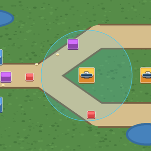
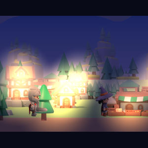
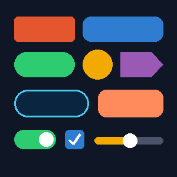
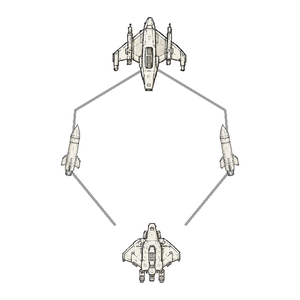

Filters showcase
32種類の画面フィルター（テレビ、VHS、白黒、水中、悪夢…）と19種類のトランジションのショーケース。ボタンをタップして、シーンへの効果を見られます。
⬇️ プロジェクトをダウンロード (2.5 MB)Français · English · Español · Deutsch · Italiano · Português · Русский · 中文 · 日本語
Android 向けの無料・コード不要 2D ゲームエンジン Yop2D で作った完成済みのゲームです。Yop2D で開き（スタート画面の「サンプル」タブ）、遊んでから、ノードを見て変更しながら学びましょう。
32種類の画面フィルター（テレビ、VHS、白黒、水中、悪夢…）と19種類のトランジションのショーケース。ボタンをタップして、シーンへの効果を見られます。
⬇️ プロジェクトをダウンロード (2.5 MB)
「ダンジョン」パックで1マスずつ組み立てた見下ろし型ダンジョン：閉じているあいだに落とし戸を渡り、トゲと骸骨の見張りをよけて、カギを取って扉をあけよう。
⬇️ プロジェクトをダウンロード (662 KB)
ペン、アンジー、おばけのアイリスの選べる物語（ノベルゲーム）：まず名前を聞かれ、夕焼けの花びら、ホタルの森、かみなりの嵐、時間制限のある選択、夏の魔法の雪…そして4つのエンディング。ぜんぶノードで作っています。
⬇️ プロジェクトをダウンロード (1.8 MB)
ホログラム風UIのショーケース：アニメーションするメニュー、スライドするパネル、本当にゲームを変えるスイッチ、音量、コインで買えるショップ、回復するエネルギーバー、ごほうびウィンドウ。すべてノードで作られています。
⬇️ プロジェクトをダウンロード (929 KB)
神経衰弱ゲーム：カードを2まいずつめくって、小さな生き物のペア8組をできるだけ少ない手数で見つけよう。カードの場所は毎回変わります。
⬇️ プロジェクトをダウンロード (286 KB)
アイソメトリックの地下ろうから脱出するゲーム：部屋を調べ、つぼをわり、宝箱の暗号をといて、金貨を3枚集めてオークからカギを買おう。持ち物、タイマー、9言語のテキストつき。
⬇️ プロジェクトをダウンロード (423 KB)
ジョイスティックでアイソメの地下ろうを歩こう：勇者は柱のうしろやテーブルの前を通り、家具にぶつかり、向きで画像が変わる。かくれた金貨5枚を見つけて格子をあけよう。位置で前後を決める表示とアイソメ歩きの見本。
⬇️ プロジェクトをダウンロード (535 KB)
キャラが自分でアニメーションを変える：歩く、しゃがむ、ジャンプ、はしごをのぼる（うしろ向き）。動かすノードはゼロ：「オブジェクトのふるまい」で設定（アクションゲームのキャラ、はしご）。パネルに再生中のアニメーション。宝石を5こ集めよう。
⬇️ プロジェクトをダウンロード (156 KB)
Candy Crush のような「3つそろえる」ゲーム：となりのキャンディを入れかえて3つ以上そろえ、連鎖をつなげて25手で1500点をめざそう。ゲーム全体がいくつかのグリッドノードだけでできています。
⬇️ プロジェクトをダウンロード (238 KB)
あちこちで爆発する海戦！ジョイスティックで船を動かし、つっこんできて砲撃してくる海賊を連射でしずめよう。ライフは3つ、スコアあり、敵はどんどん速くなる。
⬇️ プロジェクトをダウンロード (121 KB)


ナンセンスな会話コメディ：ハナには緊急の質問がある……けれど、誰もそれを聞けません。友情ハート、5つのエンディング（1つは隠し）、アヒルと靴下。楽しい会話ゲームのお手本です。
⬇️ プロジェクトをダウンロード (1.9 MB)
アイソメ視点の巨大な遺跡の迷路。たいまつの明かりだけで探検します。部屋、カーブした通路、宝箱4つ、出口の扉。オンラインパック「モジュラー遺跡」で作りました。
⬇️ プロジェクトをダウンロード (257 KB)
スケッチ風の縦向き宇宙シューティング。離陸、敵の大群、誘導ミサイル、防衛トーチカ、最後のボス、ライフが増えるボーナス。タイトル画面、ベストスコア、効果音、9言語のテキストまで、コードは一行も書いていません。
⬇️ プロジェクトをダウンロード (5.8 MB)
会話ゲームのショーケース：Hana のいるメニューで、ボタンごとに機能を実演します。ゆっくり動く背景、3層のパララックス、太字・斜体・色、実績、SMSチャット、天気とズーム、ノベルモード。タップして見て、気に入ったところをコピーしよう。
⬇️ プロジェクトをダウンロード (2.0 MB)
Hana が話していると…そこへ蚊が乱入！画像が背景を横切り（「背景を通りぬける」ノード）、彼女のまわりを回って、画面に向かってつっこんできます。ステップごとの動きを見るのにぴったり。
⬇️ プロジェクトをダウンロード (1.6 MB)
四角いキューブで作ったタワーディフェンス。自分の画像に差しかえて使えます。指でなぞって動かせる2画面ぶんのマップ、分かれ道のあるルート（ルートツール）、タワーをたてる8つの場所、強化ウィンドウ（進行バー、こうげきはんいの円）、体力バーつきのてき2しゅるい、体力20の基地。TDフォルダの画像を差しかえるとスタイルが変わります。
⬇️ プロジェクトをダウンロード (376 KB)
Yop2D のノードだけで作ったターン制タクティクスゲーム：ヒーローをタッチして行ける場所（青いマス。森は歩数が多く、山は通れない）を見て、赤い範囲のモンスターをタッチして攻撃。ユニットカード、ターン、地形、道、ダメージ入りで、自分の戦略ゲームの出発点に。
⬇️ プロジェクトをダウンロード (234 KB)
学習用の短いバージョン：ヒーロー1人とモンスター1体。戦術ノードをBlueprintの枠と付箋で解説。ヒーローをタッチして青いマスを見て、移動し、赤い範囲のモンスターを攻撃。
⬇️ プロジェクトをダウンロード (135 KB)
1日が自動で流れる3Dの村：昼、オレンジの夕方、青い夜、夜明け。日が暮れるとまどに明かりがともり、騎士はランタンをもって影を落とします。5つのボタンで1日の好きな時間にジャンプできます。
⬇️ プロジェクトをダウンロード (368 KB)
イラスト付きの冒険の導入のあと、遊べるステージへ。夕暮れの村のアルドリックとミラ（奥行きのある3D背景）、選択、幽霊の出る墓地、そして森へ。ジャンプして、剣で山賊を倒し、玉を集めてポータルへ。
⬇️ プロジェクトをダウンロード (1.6 MB)
Yop2Dの画面部品を1画面に集めました：6種類の形のボタン、グラデーション、輪郭、ネオン、画像、スイッチ、チェックボックス、スライダー、パネル、カウンター。タッチして、「要素のスタイル」ですべて変更できます。
⬇️ プロジェクトをダウンロード (13 KB)
Space 1の誘導ミサイルのしくみを学べる短いバージョン：敵が自機に向かってカーブする2発のミサイルを発射し、爆発とライフが起こります。Blueprintの枠とふせんが各ステップを説明します。
⬇️ プロジェクトをダウンロード (1.2 MB)Yop2D では、これらのサンプルは「サンプル」タブから自動でダウンロードされます。zip ファイルを「ダウンロードしたプロジェクトを開く」で読み込むこともできます。